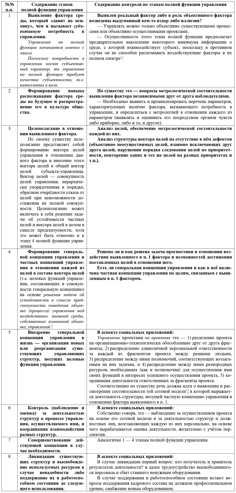
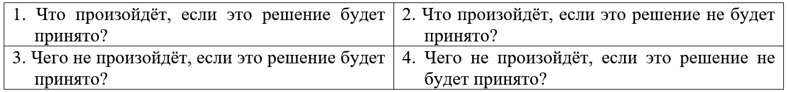
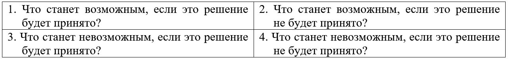
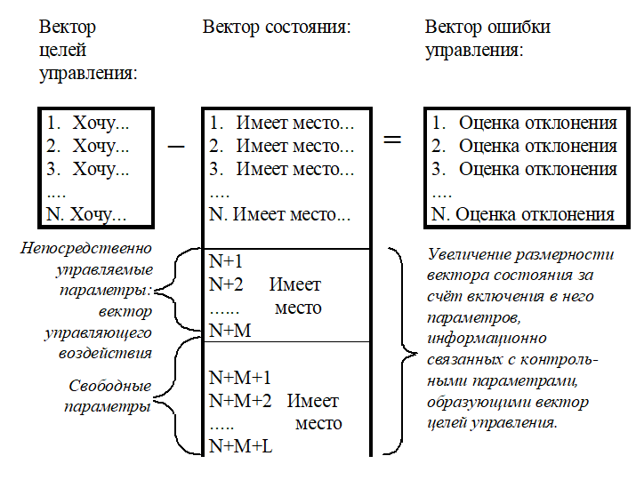
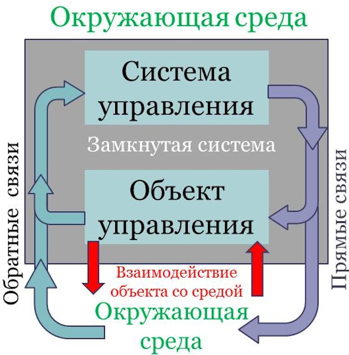
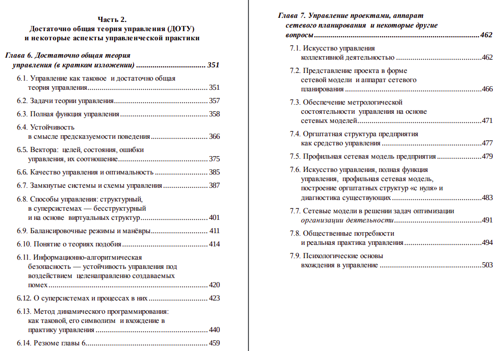

Достаточно Общая Теория Управления
Изучение ДОТУ процесс требующий труда по соображению новых для обычного человека терминов и схем. Не пугайтесь, если вы чего-то сразу не понимаете.
Я предлагаю изучение ДОТУ по следующей схеме:
- Просмотр лекции по ДОТУ диджея и преподавателя русского языка Глеба Деева из ГУУ (или любой лекции по ДОТУ, в интернете их много). Чтобы получить самое первое представление о предмете и его связи с реальной жизнью.
- Прочтение ДОТУ в кратком изложении в виде 1-й главы книги Философия управления качеством. Ниже она представлена к прочтению на этой странице
- Прочтение ДОТУ в рамках сборника Основы социологии.
Глава 1. Основы достаточно общей теории управления
Эффективность решения задач в области управления чем-либо вообще и, в частности, качеством жизни общества и производимой в нём продукции во многом предопределена тем, какие именно явления и их взаимосвязи, какие закономерности видят в реальной жизни за словом «управление» те, кто берётся за дело управления чем-либо, включая и построение систем управления качеством и управление качеством на их основе. Т.е. необходимо владеть некой теорией управления, на основе которой персонал способен обсуждать проблематику управления качеством на предприятии в её конкретике.
Но в настоящее время есть множество различных управленческих теорий и псевдоуправленческих «теорий»(это большей частью трактаты на темы «менеджмента»), которые так или иначе освещают проблематику управления. Поэтому встаёт вопрос: Какой из множества теорий и «теорий» отдать предпочтение?
Чтобы правильно ответить на него, необходимо понимать следующее:
Все теории управления задают абстрактные структуры постановки и решения управленческих задач, которые наполняются реальным содержанием той или иной предметной области, где применяется соответствующая теория. Различные теории управления отличаются друг от друга «архитектурой» такого рода структур, т.е. набором понятий*¹ и их взаимосвязей как друг с другом, так и с жизнью.
- *1. Их специфическим смыслом, который может в чём-то не совпадать в разных версиях теории управления.
Структуры постановки и решения управленческих задач, предлагаемые разными версиями теории управления не равнозначны друг другу в аспекте работоспособности, вследствие чего в жизни могут быть задачи, которые в принципе не могут быть поставлены и решены на основе структур, предлагаемых одними теориями, хотя другие теории позволяют ставить и успешно решать те же самые задачи.
Соответственно такому взгляду лучшей является та теория управления, которая позволяет ставить и решать наиболее широкий круг разнородных управленческих задач. Способность обеспечивать постановку и решение разнородных задач — безальтернативно необходимое условие для того, чтобы на основе этой теории можно было управлять комплексными проектами, в состав которых входит некоторое множество частных задач, относимых к тем или иным отраслям и сферам человеческой деятельности.
Задачи из области управления качеством — представляют собой как раз такого рода комплексные задачи, решение которых основывается на взаимно согласованном решении множества частных задач, относимых к области индивидуальной и коллективной психологии, разработке видов продукции (их конструкций или ингредиентного состава) и технологий производства, соответствующих организационных структур, а при необходимости — обслуживания в период эксплуатации, переработки продукции во вторсырьё и утилизации, юридического и финансового обеспечения деятельности предприятия.
Поэтому в соответствии с этим требованием к теории управления дальнейшее рассмотрение всей проблематики строится на основе достаточно общей теории управления (ДОТУ*² ) потому, что ДОТУ предлагает наиболее полную детально проработанную структуру постановки и решения управленческих задач. Эта структура превосходит структуры, предлагаемые другими версиями теории управления. Она обладает качествами полноты и взаимосвязности понятийного аппарата, обеспечивающими вхождение в управленческую проблематику любой сферы деятельности и координацию процессов управления в них в русле иерархии процессов управления, объемлющих совокупность нескольких сфер деятельности в комплексных проектах. Эти качества ДОТУ позволяют интерпретировать любые процессы (в том числе биосферные и социальные — культурологические, экономические и т.п.) как процессы управления или самоуправления, протекающие в русле объемлющих их процессов управления или самоуправления. Решение управленческих задач на основе ДОТУ при обеспечении метрологической состоятельности*³ моделей реальных процессов и проектов позволяет избежать ошибок субъективизма и выявить умолчания и неоднозначности при постановке задачи, под воздействием которых её решение может оказаться невозможным в принципе или же будет обусловлено сопутствующими обстоятельствами, под воздействием которых качество решения задачи может оказаться неудовлетворительным.
- *2. Достаточно общая теория управления (ДОТУ) в первой редакции была изложена в 1991 г. в ходе выполнения факультетом прикладной математики — процессов управления Ленинградского государственного университета им. А.А. Жданова научно-исследовательской работы «Разработка концепции стратегической стабильности и динамики развития сценариев возможного взаимодействия при условии сохранения паритета перспективных стратегий мировых держав на период до 2005 года», заказчиком которой был Институт США и Канады АН СССР.
ДОТУ возникла вследствие того, что аппарат теории игр не пригоден для моделирования ряда социально обусловленных процессов, поскольку он не отражает их далеко не случайную сущность, которая не описывается аппаратом теории вероятностей и математической статистики (на основе которого строится аппарат теории игр) вообще либо описывается с уймой допущений, ограничивающих возможности применения построенных моделей на практике для решения реальных задач (попытки игнорировать такого рода ограничения неизбежно ведут к ошибкам и ущербу).
- *3. Вопрос о метрологической состоятельности и её обеспечении в деятельности пояснён далее в настоящем разделе. Обеспечение метрологической состоятельности — один из ключевых вопросов практики управления любой деятельностью, в любых масштабах — от сиюминутно-бытового до судьбоносного глобально-цивилизационного.
ДОТУ может быть развёрнута самостоятельно до любой необходимой степени детальности, применительно к решению любых задач из понятия «полная функция управления». Содержание этого понятия раскрыто в таблице 1-1.
Таблица 1-1. Полная функция управления 
Пункты « 1 » и « 8 » в полной функции управления присутствуют всегда. Промежуточные между ними пункты можно объединить либо более глубоко детализировать, представив их как преемственную последовательность каких-то более мелких «этапов» соответственно потребностям практики.
В теории управления возможна постановка всего двух задач.
• Первая задача: мы хотим управлять объектом в процессе его функционирования сами непосредственно. Это задача управления.
• Вторая задача: мы не хотим управлять объектом в процессе его функционирования, но хотим, чтобы объект — без нашего непосредственного соучастия в процессе — самоуправлялся в приемлемом для нас режиме. Это задача самоуправления, или иначе — автоматического управления.
Различие задачи управления и задачи самоуправления заключается в том, что в задаче управления какие-то этапы полной функции управления и алгоритмику их реализации субъект-управленец берёт на себя или возлагает на иных субъектов, а в задаче самоуправления их же возлагает на систему управления объектом. Кроме того, в зависимости от того, какие этапы полной функции включаются, а какие исключаются из конкретного процесса управления, — задачи управления могут переходить в задачи самоуправления. Например, в технике — после того, как люди сделали всё, что необходимо на первом — четвёртом этапах полной функции управления, задача управления может быть преобразована в задачу самоуправления технического объекта в автоматическом режиме. Поэтому, когда различие задач управления и самоуправления не носит принципиального характера, то в ДОТУ используется термин «управление», тем более, что обе задачи описываются структурно идентичными наборами параметров.
Частный случай задачи управления — управление процессом самоуправления в случаях, когда изменяется целеполагание в отношении него, изменяется характер воздействия на него внешней среды, по каким-то иным причинам режим его самоуправления осуществляется неудовлетворительно.
Если следовать ДОТУ, то в основе управления любым объектом всегда лежит решение задачи об устойчивости этого объекта в смысле предсказуемости его поведения в определённой мере под воздействием: 1) внешней среды, 2) внутренних изменений в самом объекте и 3) управления.
Под определённой мерой предсказуемости понимается точность метрологически состоятельной прогностики, которая с одной стороны — диктуется само́й задачей, поставленной управленцем, а с другой стороны — обусловлена способностью управленца осуществлять жизненно состоятельную (достоверную) прогностику с большей или меньшей детальностью. Т.е. субъективно обусловленная достигаемая точность метрологически состоятельной прогностики должна быть объективно достаточной с некоторым запасом для решения поставленной управленцем задачи.
Термин «метрологическая состоятельность» — один из ключевых в инженерном деле. Но его понимание может быть расширено по отношению к тому, как он понимается в инженерном деле: «метрологическая состоятельность» в наиболее широком понимании этого термина выражается в том, что:
• выявив явление в природе (а равно в обществе), ему дóлжно поставить в соответствие определённый набор признаков, каждый из которых доступен восприятию людей либо непосредственно через их органы чувств, либо опосредованно через приборную базу, порождённую культурой (собственно в построении такого набора признаков и состоит акт выявления в природе объективно наличествующего в ней явления);
• выявленные признаки могут быть сведены:
-- либо в описание, на основе которого независимый наблюдатель способен выявить в среде его обитания это же явление либо однородное ему (по составу набора признаков*⁴ ) явление при условии, что оно объективно наличествует в среде обитания;
- *4. Вопрос о метрологической состоятельности и её обеспечении в деятельности пояснён далее в настоящем разделе. Обеспечение метрологической состоятельности — один из ключевых вопросов практики управления любой деятельностью, в любых масштабах — от сиюминутно-бытового до судьбоносного глобально-цивилизационного.
-- либо в модель, на основе которой можно вести прогностику в отношении развития этого явления либо однородных ему (по составу набора признаков) явлений.
• на основе метрологически состоятельных описаний и моделей (при условии, что они адекватны) человек (общество) может выработать своё отношение к явлению:
-- игнорировать;
-- приспособиться к нему (т.е. как-то изменить себя и своё поведение);
-- предпринять попытку управления явлением;
-- однократно или многократно порождать аналогичные явления искусственно, ориентируясь на достижение каких-то своих целей. Собственно, этот вариант отношения людей к явлениям природы и породил техносферу нынешней цивилизации.
Иначе говоря, метрологическая состоятельность деятельности, если она обеспечена, выражается в успешном прохождении последовательности: «объективно наличествующее в среде обитания явление описание либо модель этого явления деятельность, на основе описания или модели явления, связанная с этим явлением и приводящая к ожидаемым результатам».
Однако приведённое выше не является определением метрологической состоятельности как явления. В описанном выше метрологическая состоятельность, если она обеспечена в деятельности индивидов, коллективов, обществ, человечества, выражается практически. Определить метрологическую состоятельность как явление можно следующим образом:
Метрологическая состоятельность в наиболее широком понимании её сути представляет собой способность выявить объективную качественно-количественную определённость, характеризующую природное или социальное явление, посредством: 1) измерительно-приборной базы науки или 2) органов чувств человека, или 3) «умозрительно». Это определение относится как к реально существующим, так и к объективно возможным явлениям (в случае метрологической состоятельности объективных возможностей реализации подразумевается творческая деятельность).
Выявление метрологической несостоятельности теории или модели — объективный показатель её лженаучности, т.е. жизненной и управленческой несостоятельности ВНЕ ЗАВИСИМОСТИ ОТ ТОГО, ОТНОСИТСЯ ОНА К СФЕРЕ ЕСТЕСТВОЗНАНИЯ И ЕГО ПРИЛОЖЕНИЯМ ЛИБО — К СФЕРЕ ТАК НАЗЫВАЕМЫХ «ГУМАНИТАРНЫХ НАУК».
Предназначение всех научных теорий — метрологически состоятельным образом описывать причинно-следственные связи в жизни, что необходимо для решения задачи об устойчивости объектов в смысле предсказуемости их поведения.
Но кроме метрологически состоятельных параметров теории и построенные на основе теорий модели могут включать в себя разного рода оценки. Измеримые параметры и оценки — разные сущности.
В основе измерений лежит обеспечение метрологической состоятельности процесса движения информации от объекта к субъекту. При этом замена одного субъекта на другого в условиях обеспеченности метрологической состоятельности процесса измерений не сказывается на результате измерений (если вывести из рассмотрения вопрос о статистической обработке и доверительных интервалах). Иначе обстоит дело при выработке оценок.
От метрологически состоятельных и непосредственно измеримых параметров состоятельные оценки отличаются тем, что в их основе лежат два фактора: 1) некая совокупность метрологически состоятельных и потому непосредственно измеримых (выявляемых) параметров, характеризующая объект исследований, 2) субъективизм, порождающий оценку на основе той или иной алгоритмики обработки результатов измерений(В контексте настоящей работы это — определение термина «оценка».). В данном случае под алгоритмикой выработки оценки подразумевается как формализованная алгоритмика некой научной теории (или модели), так и алгоритмика, свойственная психике людей, которая может быть и не формализованной, и не осознаваемой.
В силу названных определяющих обстоятельств замена одного субъекта на другого может повлечь за собой изменение оценки одной и той же совокупности измерений, поскольку субъект либо несёт в своей психике некую иную алгоритмику выработки оценки, либо вырабатывает её в ходе построения теории (или своего отношения к явлению, с которым столкнулся), либо избирает подходящую на его взгляд алгоритмику оценки из некоторого множества, предлагаемого известными ему теориями. Это касается выработки оценок исследователями и разработчиками, чей профессионализм в определённой области деятельности позволяет им осознавать действующие в ней различные факторы и их взаимосвязи и на этой основе осознанно строить оценки. Иначе обстоит дело, когда оценку формирует неквалифицированный потребитель, не осознавая ни действующих факторов, ни их взаимосвязей*⁵ .
- *5. Вопрос о метрологической состоятельности и её обеспечении в деятельности пояснён далее в настоящем разделе. Обеспечение метрологической состоятельности — один из ключевых вопросов практики управления любой деятельностью, в любых масштабах — от сиюминутно-бытового до судьбоносного глобально-цивилизационного.
Оценка становится несостоятельной, если: 1) метрологическая состоятельность измерений не обеспечена или 2) алгоритмика обработки измеренных показателей некоторым образом некорректна сама по себе или утрачивает корректность в тех или иных конкретных обстоятельствах её применения (так линейные математические модели и модели, не учитывающие дискретный характер процесса, не всегда работоспособны, хотя в каких-то других случаях они достаточно работоспособны).
В практической деятельности могут присутствовать как результаты измерений, так и результаты оценок одного и того же параметра объективного явления, но измерения и оценки во всех случаях необходимо различать.
Понятие «устойчивость объекта в смысле предсказуемости его поведения…» — более широкое понятие, нежели принятое в большинстве отраслей науки и техники понятие устойчивости как способности объекта (процесса) возвращаться после исчезновения возмущающего воздействия к прежнему режиму своего функционирования (течения), — иногда сопровождаемое разного рода уточняющими оговорками. Решение задачи об устойчивости объекта в смысле предсказуемости поведения в ряде случаев позволяет, организовав адекватное управление, обеспечить устойчивость функционирования объектов (течение процессов), не устойчивых в обычном понимании термина «устойчивость»*⁶ .
- *6. Наиболее широко известным примером решения задачи об устойчивости в смысле предсказуемости поведения и организации на этой основе соответствующего управления, придающего устойчивость заведомо неустойчивому процессу, является вся история конструирования и строительства вертолётов одновинтовой схемы. Вертолёт одновинтовой схемы имеет:
● один несущий винт, который вращается вокруг вертикальной оси, — он создаёт подъёмную силу и силу тяги в направлении полёта;
● один рулевой винт, расположенный на хвостовой балке, который вращается вокруг горизонтальной оси, перпендикулярной плоскости симметрии вертолёта, — он предназначен для компенсации реактивного момента от вращения несущего винта и тем самым — для предотвращения вращения фюзеляжа вертолёта в направлении, противоположном направлению вращения несущего винта, а также — для изменения ориентации вертолёта по курсу.
Но если вращающийся винт перемещается в направлении, перпендикулярном оси своего вращения, то воздушный поток по разные стороны от оси вращения набегает на лопасти винта с разными скоростями. Вследствие этого на лопастях винта (если углы атаки лопастей одинаковые) возникают разные по величине аэродинамические силы, которые порождают кренящий момент. По этой причине вертолёт с таким несущим винтом во время полёта обречён завалиться на один из бортов и после этого, потеряв подъёмную силу, «упасть камнем»; практически же он вообще оказался бы не способен взлететь. В терминах теории управления это означает, что желательный режим функционирования объекта управления объективно неустойчив.
Для того чтобы вертолёт одновинтовой схемы мог летать, требуется непрестанно обнулять кренящий момент. Наиболее эффективный способ достичь этого — изменять угол атаки лопастей несущего винта в процессе его вращения так, чтобы лопасть, перемещающаяся в направлении полёта, имела меньший угол атаки, нежели лопасть, перемещающаяся в направлении, обратном направлению полёта: в этом случае там, где скорость набегающего на лопасть потока выше, — угол атаки лопасти меньше и возникает подъёмная сила меньшей величины, чем была бы при фиксированном закреплении лопасти в ступице винта; а там, где скорость набегающего на лопасть потока ниже, — угол атаки лопасти больше и возникает подъёмная сила большей величины, чем была бы при фиксированном закреплении лопасти в ступице винта; вследствие этого, управляя соотношением углов атаки при прохождении лопастями несущего винта разных секторов ометаемого ими круга, можно управлять величиной кренящего момента и направлением его действия (последнее позволяет вертолёту лететь носом вперёд или боком, зависать на месте и т.п.).
Задача управления углами атаки лопастей при вращении несущего винта вертолёта была решена инженером Борисом Николаевичем Юрьевым (1889 — 1957) в 1911 г. Изобретение им «автомата перекоса» — устройства, обеспечивающего управление изменением угла атаки лопастей несущего винта при его вращении, (на схеме выше) — открыло пути к тому, чтобы вертолёт одновинтовой схемы с управляющим винтом на хвостовой балке стал реальностью. И ныне именно эта схема вертолёта получила наиболее широкое распространение благодаря своей простоте, надёжности и превосходству по весовой отдаче в сопоставлении её с другими схемами.
Решение задачи об устойчивости объекта в смысле предсказуемости его поведения — составная часть этапа полной функции управления, на котором осуществляется выработка концепции управления и внедрение её в жизнь. Её решение требует выявления и разрешения неопределённостей, которые могут быть сведены в так называемый «квадрат Декарта». «Квадрат Декарта» — таблица размером 2x2, форма представления вопросов, необходимых для разрешения неопределённостей в решении задачи об устойчивости объекта управления в смысле предсказуемости его поведения. Он содержит в себе следующие вопросы:

Однако «квадрат Декарта» — следствие структурно аналогичного другого «квадрата» — «квадрата возможностей», включающего в себя другие вопросы:

Дело в том, что для того, чтобы что-то произошло, необходимо, чтобы существовали объективные возможности: если возможности объективно не существуют либо они, объективно существуя, оказываются закрыты теми или иными сложившимися обстоятельствами, то ни одно событие, им соответствующее, произойти не может. Поэтому «квадрат возможностей» должен исследоваться на шаге, предшествующем исследованию «квадрата Декарта».
Но ситуация «решение принято» не означает, что оно будет реализовано: возможен и умышленный саботаж его реализации, возможна и неосуществимость решения по причине отсутствия необходимого для его реализации профессионализма. И это умолчание тоже надо иметь в виду, анализируя ситуацию выбора альтернатив в форме «квадрата Декарта» и «квадрата возможностей».
Однако все ныне господствующие в системе образования теории управления социально-экономической направленности и многие теории управления технической направленности начинают рассуждения об управлении при внесённом в них по умолчанию предположении о том, что задача об устойчивости в смысле предсказуемости поведения объекта управления некоторым образом уже успешно решена или же объект заведомо устойчив в этом смысле. Так же в своём большинстве они ничего не говорят ни о выработке концепции управления, ни о внедрении её в жизнь.
Соответственно главная претензия ДОТУ ко всем такого рода теориям «управления» и «менеджмента», которые стали культовыми в постсоветской России и вошли в стандарты высшего образования (а так же и к исторически сложившейся теории государства и права), состоит в том, что все они не дают представления о полной функции управления и решении задачи об устойчивости в смысле предсказуемости поведения объекта управления, не всегда разграничивают объект управления и среду, с которой он взаимодействует, в силу чего описывают в своём большинстве управление не по полной функции, а только более или менее полный набор её фрагментов, начиная с 5‑го её этапа — правления по некой концепции управления, большей частью неизвестного происхождения и достаточно часто не вполне определённого содержания и с наличием вредоносных сопутствующих эффектов.
По этим причинам последователи такого рода «теорий» неизбежно массово являют свою управленческую несостоятельность во всех сферах общественной жизни на руководящих должностях всех уровней. А их управленческая некомпетентность является основой для проведения в жизнь под лозунгами созидания и развития концепций разрушения и деградации, в чём всегда выражается чьё-то своекорыстие (большей частью не афиширующее себя или искусственно сделавшее себя анонимным): внутригосударственное, иностранное, транснациональное — большей частью мафиозно-корпоративное по своей организации.
В основе решения задачи об устойчивости объекта в смысле предсказуемости поведения и в деле выработки концепции управления лежат интуиция и методы науки. Но наука, образно говоря, представляет собой «интеграл по времени на протяжении всей истории от осмысленной интуиции всех когда-либо живших исследователей, оставивших в ней свой след». Т.е. интуиция более значима, чем готовые к употреблению знания и навыки, прежде всего потому, что она определяет, какими именно научными методами пользоваться или как создавать новые методы, если в тех или иных обстоятельствах выявляется неработоспособность существующих теорий и методов. При этом надо отметить, что интуиция (как и психическая деятельность личности в целом) носит нравственно обусловленный характер.
Информация в процессе управления структурируется в соответствии со схемой, представленной ниже на рис. 1-1.
На рис. 1-1:
• 1, ... , N — контрольные параметры объекта управления (процесса) в порядке, обратном вынужденному отказу от осуществления избранных определённых целей при невозможности достижения полной совокупности целей;
• N+1, ... , N+M+L — параметры, связанные с контрольными в матрице возможных состояний, т.е. связанные объективными закономерностями бытия или субъективно выстроенными структурно-алгоритмическими взаимосвязями;
• N+1, ... , N+M — непосредственно управляемые параметры (вектор управляющего воздействия); также возможен частный случай, когда все или некоторые непосредственно управляемые параметры имеют индексы не превосходящие N;
• N+M+1, … , N+M+L — свободные параметры, любые значения которых в процессе управления признаются допустимыми (в противном случае, вследствие наложения на их значения тех или иных ограничений они переходят в категорию контрольных).
• В вектор ошибки управления в качестве его компонент могут входить как измеряемые ошибки управления, так и оценки ошибок, которые должны быть состоятельны.

Если структура, представленная на рис.1-1, не может быть заполнена метрологически состоятельной информацией (в том числе и состоятельными оценками), то осуществление управления либо невозможно, либо начатый и, казалось бы, успешно протекающий процесс управления может непредсказуемо потерять качество управления*⁷ или потерпеть крах. Если соотносить структуру, представленную на рис. 1‑1, с полной функцией управления, то концепция управления описывает действия, ведущие к обнулению вектора ошибки (равно — к достижению целей) в процессе управления.
- *7. Качество управления — это оценка вектора ошибки управления. В процессе осуществления управления в случае, если размерность вектора ошибки велика, то деятельность на основе контроля оценки может быть предпочтительнее, нежели деятельность на основе контроля всех компонент вектора ошибки при условии, что управление протекает в пределах допустимых отклонений от идеала.
Согласно ДОТУ управление (а равно — самоуправление) может осуществляться структурным и бесструктурным способами.
Структурный способ управления предполагает создание структуры, несущей алгоритмику управления процессом. Структура состоит из конечного, определённого по составу, количеству и взаимосвязям набора функционально специализированных элементов, которые взаимодействуют друг с другом и с внешней средой в соответствии с концепцией управления (т.е. в соответствии с целями и алгоритмикой их достижения).
При структурном способе качество управления обеспечивается, во-первых, архитектурой структуры (набором и взаимосвязями образующих её элементов) и, во-вторых, степенью пригодности самих элементов для осуществления возлагаемых на каждый из них функций. При этом выясняется, что архитектура структуры, соответствующая концепции управления, обеспечивает решение возлагаемых на неё задач даже при некотором предельно низком, однако допустимом качестве входящих в неё элементов. Но ошибки в построении архитектуры структуры могут сделать её полностью неработоспособной даже в том случае, если она собрана из наилучших по параметрам своей функциональности элементов. При структурном способе управления построение структуры предшествует началу процесса управления.
Однако в ряде случаев возможно осуществление бесструктурного управления (а равно — самоуправления). Предположим, что у нас имеется множество неких элементов, которые обладают следующими свойствами:
- Все элементы самоуправляемы на основе информационно-алгоритмического обеспечения, хранящегося в их памяти.
- Каждым из них можно управлять извне, поскольку они могут принимать информацию и алгоритмику в память (по п.1).
- Они могут управлять другими элементами (по п.1 и п.2), поскольку могут выдавать информацию из памяти другим элементам множества.
Множество элементов, обладающих названными свойствами, мы далее будем именовать «суперсистемой».
Бесструктурное управление возможно в суперсистемах, состоящих из множества аналогичных в некотором смысле друг другу элементов. Требование аналогии (т.е. способности элементов к более или менее полной функционально состоятельной взаимозаменяемости друг друга в разных процессах*⁸ ) в данном случае — дополнительное требование, по отношению к трём характеристическим требованиям, положенным в определение термина «суперсистема», связанное с тем, что, чем ниже показатели взаимозаменяемости, — тем ниже способность суперсистемы к порождению в себе бесструктурного управления.
- *8. Пусть даже не мгновенной взаимозаменяемости, а взаимозаменяемости на основе подготовки в течение некоторого времени элементов суперсистемы к новым для них функциям.
Предположим, что мы распространяем в суперсистеме информацию циркулярно, т.е. безадресно, в режиме «для всех, кто способен принять». Циркулярное распространение информации (т.е. одна и та же информация проходит через множество элементов), подчинённое некоторым статистическим характеристикам и разного рода оценкам возможного течения событий, несёт в себе вероятностную предопределённость изменения информационного состояния памяти некоторого подмножества элементов в составе суперсистемы. Вероятностно предопределённое изменение состояния памяти элементов ведёт к изменению статистических характеристик их самоуправления. Если распространение информации в этом множестве и его последствия обладают устойчивой предсказуемостью в статистическом смысле (то есть порождает предсказуемую статистику явлений), то существует отличная от нуля вероятность, что в результате прохождения через суперсистему некоего информационного модуля некоторое количество элементов в ходе своего самоуправления образует структуру, несущую алгоритмику управления. В этом процессе может возникнуть и более, чем одна структура. Это означает, что процессами в суперсистемах можно управлять бесструктурно, а также в пределах суперсистемы самоуправление тоже может носить бесструктурный характер.
Принципиальное отличие бесструктурного управления от структурного состоит в том, что к моменту начала управления процессом какие-либо целесообразно ориентированные структуры в бесструктурном управлении отсутствуют: структуры, принимающие на себя алгоритмику управления, складываются в процессе управления «спонтанно» вследствие реакции элементов суперсистемы на появление в их памяти и алгоритмике самоуправления определённой информации. И это могут быть различные по архитектуре (и как следствие — по функциональной состоятельности) структуры.

Замкнутая система (см. рис. слева) в терминах ДОТУ это — объект управления плюс система управления им, связанные друг с другом цепями прямых и обратных связей и взаимодействующие со средой. По прямым связям распространяются управленческие решения в виде сигналов, несущих информацию и алгоритмику в объект управления и в среду, с которой объект взаимодействует. По обратным связям в систему управления поступает информация о процессах, протекающих в объекте и в среде, с которой взаимодействует объект*⁹ . Всё, что касается управления в его конкретике (реальность), может быть отображено в эту схему (в абстракцию). В зависимости от того, как организованы контуры прямых и обратных связей, возможны несколько схем управления.
- *9. До появления ДОТУ в понятие «замкнутая система» прямые и обратные связи, через которые протекает обмен информацией и алгоритмикой с внешней средой, не включались. Включение ДОТУ в понятие «замкнутая система» прямых и обратных связей, через которые протекает обмен информацией и алгоритмикой с внешней средой, открывает возможности к более широкому пониманию процессов управления и к постановке и решению управленческих задач.
Программная схема управления. Внешние обратные связи после включения схемы в процесс управления в замкнутой системе отсутствуют: текущая информация о состоянии внешней среды, взаимодействии и положении объекта в ней в системе управления не используется.
Управляющий сигнал является функцией времени и, возможно, — информации, поступающей по каналам внутренних обратных связей, локализованных в объекте.
Учёт влияния на поведение объекта всех возмущающих воздействий производится на стадии проектирования и создания объекта и (или) системы управления им и программы управления. Уровень максимально возможного качества управления является функцией соответствия программы управления реальным условиям её реализации, поскольку замкнутая система не реагирует на реальное воздействие внешней среды. Гибкость поведения отсутствует.
Программно-адаптивная схема управления. Внешние обратные связи в системе есть.
Управляющий сигнал является функцией реальных параметров внешней среды и замкнутой системы, информация о которых поступает по цепям внешних и внутренних обратных связей. Но в то же время управляющий сигнал является и однозначной функцией программы (закона управления) в том смысле, что одинаковой информации, поступающей по цепям обратных связей, всегда соответствует один и тот же управляющий сигнал.
Эту тождественность реакции «вход — выход» можно понимать и в смысле соответствия статистических характеристик управляющего сигнала информации, поступающей по цепям обратных связей. Реакция системы на возмущение до некоторой степени гибкая в том смысле, что управляющий сигнал и реакция замкнутой системы на возмущения — функция этих возмущений.
Программно-адаптивная схема может реализовывать разные принципы управления. Отметим два наиболее часто встречающихся: управление по возмущению, и управление по отклонению. В первом случае система управления вырабатывает управляющий сигнал на основе измерения в процессе управления непосредственно возмущающего воздействия. Во втором случае система управления вырабатывает управляющий сигнал на основе измерения контрольных параметров и оценки их отклонений от значений, характеризующих идеальный режим управления. При необходимости оба принципа могут сочетаться в одной и той же системе управления.
Схема управления предиктор-корректор.
Управление в схеме предиктор-корректор строится на основе прогнозирования в само́м процессе управления поведения замкнутой системы, исходя из информации о текущем и прошлых состояниях замкнутой системы и воздействии на неё окружающей среды.
В этом принципиальное отличие схемы управления предиктор-корректор от программной и программно-адаптивной схем управления, в которых решение задачи прогностики полностью вынесено за пределы функционирования схемы в процессе управления.
Структурно-алгоритмически система управления, реализующая схему предиктор-корректор, во многих случаях может быть условно представлена как сочетание:
• предиктора, выполняющего функцию прогноза и выработки закона управления (программы управления) — этому соответствуют 1‑й — 4‑й этапы полной функции управления,
• и программно-адаптивного модуля, который управляет объектом на основе закона управления, выработанного предиктором, адаптируя его к конкретике обстоятельств, в которых протекает процесс управления, — этому соответствуют 5‑й — 7‑й этапы полной функции управления.
При этом прогнозная информация в форме закона управления подаётся на вход программно-адаптивного модуля системы управления.
Вследствие этого система управления реагирует не только на уже свершившиеся отклонения замкнутой системы от идеального режима, но и на те, которые только имеют тенденцию к осуществлению (в случае, если прогнозирование достаточно точное).
Если программно-адаптивное управление замыкает прямые и обратные связи через настоящее и уже свершившееся прошлое, то в схеме предиктор-корректор некоторая часть прямых и обратных связей замыкается через прогнозируемое будущее.
Информация о свершившемся прошлом и о настоящем в схеме предиктор-корректор, кроме прогнозирования и выработки управляющего сигнала, также используется как основа для минимизации (периодического обнуления) в процессе управления составляющей вектора ошибки, обусловленной накоплением с течением времени ошибок прогнозирования.
Полная функция управления может осуществляться только в интеллектуальной схеме управления (разновидность схемы управления предиктор-корректор — предуказатель-поправщик), которая предполагает творчество системы управления — субъекта-управленца — как минимум в следующих областях: выявление факторов среды, вызывающих потребность в управлении или изменении его характера; формирование векторов целей; формирование новых концепций управления; совершенствование методологии и навыков прогноза при решении вопроса об устойчивости в смысле предсказуемости при постановке задачи управления и (или) в процессе управления по схеме предиктор-корректор.
В жизни обществ бесструктурное управление прослеживается, прежде всего, по процессам обмена информацией между членами общества и разного рода их объединениями, поскольку возникающие в процессе бесструктурного управления структуры далеко не во всех случаях обретают юридическую оформленность. В каких-то случаях структуры, возникающие в процессе бесструктурного управления, могут стабилизироваться и стать носителями структурного управления, а в каких-то иных случаях возникшие в бесструктурном управлении структуры могут распасться либо по достижении ими целей управления, либо не выдержав давления среды или вследствие неадекватности информационно-алгоритмического обеспечения деятельности образовавших их элементов.
Понятийный аппарат ДОТУ позволяет метрологически состоятельно описать в её терминах любой природный, социальный, технический процесс как частный процесс управления, протекающий в русле объемлющих его процессов, которые в свою очередь могут быть интерпретированы как процессы управления иерархически более высокого порядка.
Вы можете продолжить изучение ДОТУ в рамках сборника Основы социологии. 2 часть посвящена теории управления, всего 100 страниц А5 